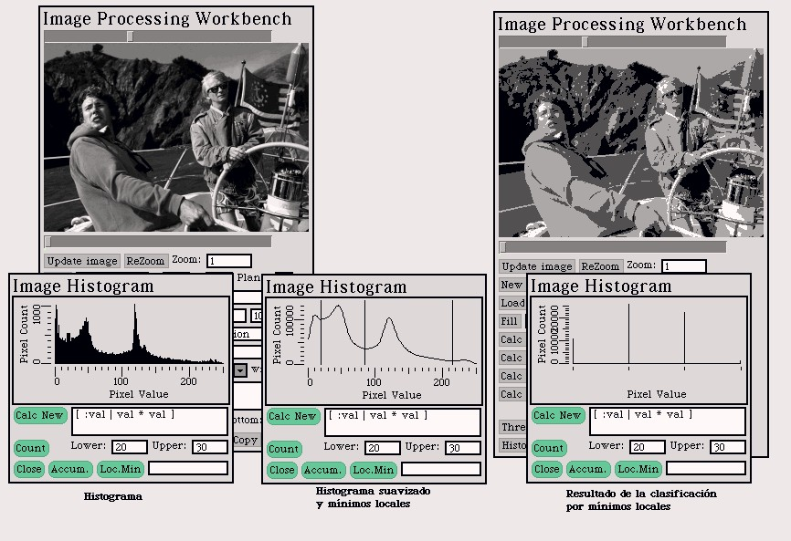
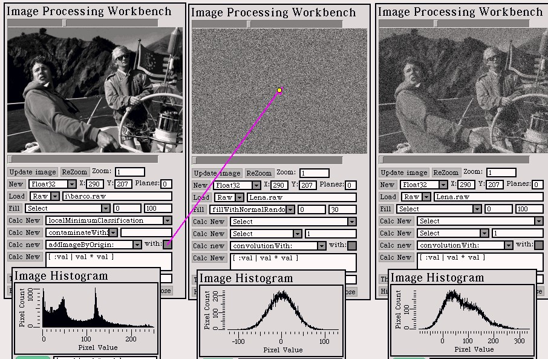

Introducción
al Procesamiento de Imágenes
Introducción
al Procesamiento de Imágenes


Posteriormente intenté aplicar la técnica a imágenes multibanda (en color). Para ésto, ecualicé independiente el histograma de cada banda. El resultado puede no ser satisfactorio, porque las componenetes de color de cada pixel son modificadas independientemente, y el matiz de color de cada pixel puede cambiar. Por ejemplo, con imágenes que incluían personas y un cielo azul claro, al ecualizar el histograma del azul se disminuye la cantidad de este color en los rostros (por la gran cantidad de azul claro en el cielo) y se incrementa la cantidad de color rojo (debido a que casi no hay rojo en otra área de la imagen). El resultado es que la piel se vuelve rojiza. La magnitud de este efecto depende de qué objetos haya en la imagen que se verían artificiales si su color cambia, y del balance general entre los colores. De cualquier manera, si lo que se busca es mejorar el contraste, aún a costa del verdadero color de cada pixel, el resultado es satisfactorio.
Pensé entonces que podría ser interesante una técnica similar, pero que no afecte el matiz de color de cada pixel, sino sólo su luminosidad. O sea, al modificar un color, multiplicar por el mismo factor todas sus componentes. Para ésto, obtuve el histograma de la norma (utilicé norma 2) de la imagen. La ecualización se realiza con éste histograma, afectando idénticamente todas las bandas. El resultado es una imagen en que cada pixel tiene el mismo balance entre las componenetes de color que en la imagen original, pero cuyo histograma de la norma está ecualizado. Lo que se observa es similar a la ecualización de imágenes monocromáticas: el contraste está fuertemente realzado, pero los colores aparecen todavía naturales.
La implementación presentada incluye ambos tipos de ecualización, y la posibilidad de ver el histograma convencional y el de la norma.
Dado que estamos trabajando con una señal discreta, en vez de aproximar la derivada, considero que un punto es un mínimo local si su valor es menor que el de su vecino izquierdo y menor o igual que su vecino derecho. (Hubiera sido posible también considerar a los vecinos al revés.) Con las imágenes con las que probé el resultado fue satisfactorio.
La técnica utilizada no funciona cuando se usa con un histograma dinámico, porque podría pasar que un mínimo local sea simplemente valores para los que no hay ningún pixel, y tomando únicamente los valores de gris para los que hay pixels, el mínimo no sea detectado, y se junten por error dos clases. Por ésto, y por problemas detectados y comentados en el ejercicio siguiente, decidí implementar los que llamé Histogramas Aproximados. Estan descritos en detalle en el ejercicio siguiente.
La imagen de clasificación generada se hace de tipo Float, ya que mi implementación hace siempre stretching a los valores apropiados en la pantalla, y ayuda a que cada clase se distinga visualmente.
Finalmente, no implementé la clasificación
por mínimos locales par imágenes multibanda (o en color).
Esto exigiría encontrar mínimos en un espacio multidimensional,
con la posibilidad de que un punto se mínimo en un coordenada y
no en otra. Incluso podría ser máximo en un punto de ensilladura.
Este problema requiere mayor estudio para poder ser atacado.

Un Histograma Aproximado es un híbrido entre un histograma estático y uno dinámico, y resulta de gran utilidad para imágenes de tipo Float. Se toma el rango de valores entre el mínimo y el máximo de los valores utilizados por la imagen, y se lo divide en intervalos de igual longitud. La cantidad de intervalos a tomar es proporcionada al construir el histograma. (Alternativamente, es posible informar en la longitud de cada intervalo, y la cantidad de ellos necesaria es calculada automáticamente). Los valores de los pixels se hacen corresponder con el intervalo en el que se encuentren. De esta manera, lo que se cuenta es la cantidad de pixels cuyo valor se encuentre en cada intervalo. El resultado es un histograma que al mostrarse por pantalla resulta más realista que el histograma dinámico (que es difícil de graficar, y cuya forma ideal de mostrarse por pantalla es justamente lo que hace el Histograma Aproximado, que muestra la "densidad" del histograma dinámico).
De esta manera es posible observar que las imágenes
generadas corresponden a la distribución correspondiente.

Para contaminar con ruido Aditivo o Multiplicativo, primero debe generarse la imagen de ruido con la distribución deseada, y luego sumarse o multiplicarse ambas imágenes. Si se desea contaminar, por ejemplo, el 10% de la imagen, aplicar a la imagen de ruido un Salt&Pepper de #(90 0 0) si es ruido aditivo o #(90 1 1) si es multiplicativo. Debe tenerse en cuenta que la distribución de esta imagen ya no es la distribución original, y que si se está simulando el ruido producido por algún dispositivo físico es necesario saber si las características del ruido que se desea imitar realmente responden a la distribución obtenida.